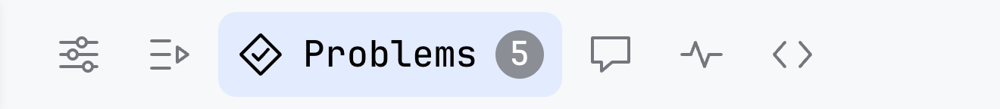
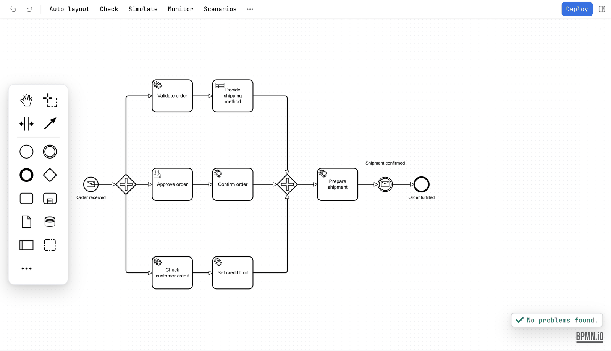
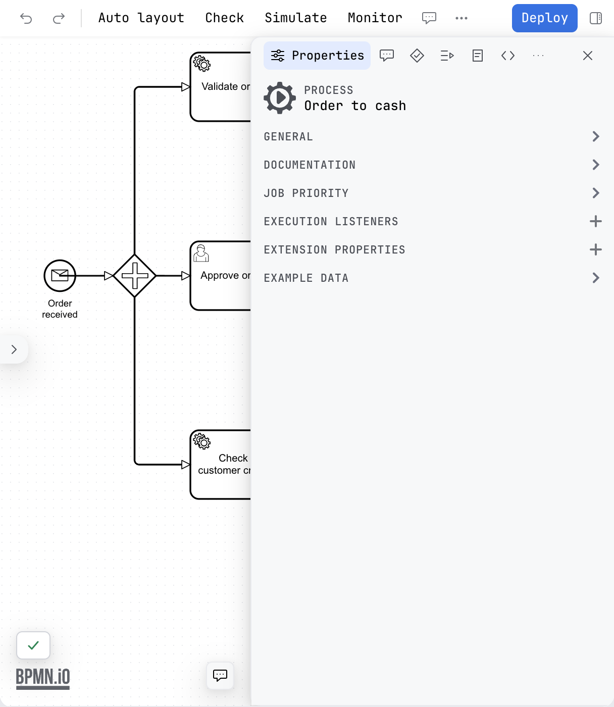

Guide / Editors
The sidebar
The sidebar runs the full height of the editor beside the canvas, with a row of tabs along its top: the properties of what is selected, the scenarios of a process, what the check found, the comments, what the engine is doing and the code behind a step.
What it is
The sidebar is one surface in all three editors, and it is where most of what Penstock adds to a diagram is read. It sits to the right of the canvas and carries a row of tabs along its top. Each editor registers its own tabs, in a fixed order, so a tab you know from a diagram is in the same place whenever the same tab exists in a decision or a form.
With the sidebar open and an element selected, you can go from what the diagram says to the engine, to the files and back without leaving the editor. Editing a diagram covers the canvas beside it.

The tabs
| Editor | Tabs, in order |
|---|---|
| A diagram | Properties, Scenarios, Problems, Comments, Monitor, Code |
| A decision | Properties, Problems, Try |
| A form | Properties, Preview, Problems |

The tab that is open shows an icon and its name. Every other tab is an icon, and resting the pointer on it names it. A count badge sits on Problems, and on Comments in a diagram. A tab with nothing to show says what it is for and what to do next, rather than staying blank. The arrow keys move between the tabs.
What each tab is for
| Tab | Editor | What it holds |
|---|---|---|
| Properties | All three | The settings of the selected element, in the groups the engine defines. In a decision, the id, name and documentation of the selected decision. The properties panel. |
| Scenarios | Diagram | The ways through this process, generated from the diagram or written by hand, and run against an engine. Open a scenario to read it step by step. Scenarios. |
| Problems | All three | Everything the check found, in groups. The diagram's list has a group for each kind of finding. The decision's and the form's is one list. Diagram check. |
| Comments | Diagram | The comments on the elements of the diagram, and the thread of the selected element. Comments. |
| Monitor | Diagram | What the engine is doing with this diagram now: incidents, and the instances waiting at each step. Monitor. |
| Code | Diagram | The workers, classes, beans, tests and usages behind the selected step. Code links. |
| Try | Decision | Type the values a decision table asks for and see which rules match and what it returns. The DMN editor. |
| Preview | Form | The form as a user sees it, beside the JSON it is given and the JSON it would submit. The form editor. |
Only the tabs of the editor you have open are there. A diagram has no Preview tab, because a form is the only thing that previews, and a form has no Scenarios tab.
Open and close it
The sidebar toggle is the last thing on the toolbar, at the right edge, and it stays pressed while the sidebar is open. It is the Sidebar action, so it is also in the More menu and the command palette.

Open the sidebar
JetBrains
The shortcut is Ctrl+Alt+', or ⌘⌥' on a Mac, and the action is called Sidebar in the keymap, under Tools | Penstock | View. The Penstock tool window is a different surface: it is on the stripe at the side of the IDE and shows the whole project as a tree. See The Penstock tool window.
Command line
Not available on the command line. The command line has no editor and so no sidebar. penstock show lists a diagram's elements, and penstock check and penstock code report what the tabs would show.
VS Code
The shortcut is Ctrl+Alt+', or Cmd+Alt+' on a Mac, and the command is Penstock: Sidebar. The keys are bound only while a Penstock editor has focus. The Code view in the Explorer is a different surface. See Shortcuts.
How wide, and what it remembers
The sidebar takes about a third of the width of the editor, between 320 and 480 pixels. The dividing line can be dragged from 280 pixels to half the editor, and a double click on it brings back the default width. With the keyboard, focus the dividing line and use the left and right arrow keys.
Below about 960 pixels of editor width the sidebar is a drawer over the canvas rather than a column beside it, so the canvas keeps room for the toolbar. A drawer has a close button at the end of the tab row. Closed that way it leaves a slim bar with the name of the tab, and for Scenarios the step you are on, and a button that opens it again.

The width is kept in ~/.penstock/preferences.json, so it is the same in every tool on the machine. The tab you left selected, and whether the sidebar was hidden, are kept for each editor separately: a diagram, a decision and a form each come back on the tab you left in that kind of file.
Going deeper inside a tab
The tabs choose what you look at. Going deeper inside one is a separate step: opening a scenario, a thread of comments or a long group of code usages. A row with a ‹ and the name of what you are in appears under the tab row, and it takes you back. Esc does the same while the focus is not in a text field. Problems, Monitor, Comments and Code each keep their own state while you look at another tab, so Monitor holds the instances it fetched and Code holds what you had open.
What you see
- A column beside the canvas with a row of tabs along its top.
- A count badge on Problems while the check has errors or warnings, and on Comments while a comment is open.
- The open tab by name, the others as icons.
Common problems
- The sidebar is gone.
- Press the sidebar toggle at the right of the toolbar, or the Sidebar action in the More menu.
- I closed it and only a bar is left.
- The editor is narrow, so the sidebar is a drawer. Press the button on the bar to open it again, or make the editor wider.
- Monitor says there is no engine.
- It asks for the address of the profile in force. Monitor has what to set.
- Scenarios says it needs Pro.
- Scenarios is Pro on your machine and Team in a pipeline. Plans and licence.
- A tab is missing.
- Each editor has its own tabs: Scenarios, Comments, Monitor and Code are for diagrams, Try for decisions, Preview for forms. The table above says which. Scenarios is shown for Camunda 7, Camunda 8, Operaton and CIB seven diagrams.
- The Problems badge says 5 and the card lists fewer.
- The card is a summary of the first findings. Show all opens the Problems tab with the whole list.